pacman::p_load(sf, sfdep, tmap, tidyverse)Hands-on Exercise 5b: Local Measures of Spatial Autocorrelation
Overview
Hands-on Exercise 5a established that GDP per capita in Hunan is spatially clustered, with a Moran’s I of 0.30 and a p-value of 1.1 × 10-6. That is the whole of what a global statistic can say. One number for 88 counties answers whether, not where, and it cannot distinguish a province with two compact clusters from a province with a smooth gradient, since both produce the same I.
Local measures of spatial autocorrelation decompose that single number back into the 88 contributions it was assembled from. They are not summary statistics but scores, one per county, and their intuition is the same as the global measures’. Some are mathematically connected to them. A Local Indicator of Spatial Association, or LISA, is by Anselin’s definition a statistic whose sum over all observations is proportional to the global statistic, so local Moran’s I literally adds up to global Moran’s I. Alongside LISA, the Getis-Ord Gi* statistic is introduced as a complementary measure that answers a related but distinct question.
This exercise uses the sfdep package rather than spdep. The two wrap the same computations, since sfdep calls spdep internally, but sfdep returns neighbour lists and weights as list columns inside an sf data frame. The whole analysis therefore stays in one table and one pipeline, instead of moving between a spatial object and a set of parallel nb and listw objects. By the end of the exercise the following are in place:
- geospatial data imported with the appropriate functions of sf,
- a csv file imported with the appropriate function of readr,
- a relational join performed with the appropriate function of dplyr,
- LISA statistics computed with sfdep to detect clusters and outliers,
- Getis-Ord Gi* statistics computed with sfdep to detect hot and cold spots, and
- both sets of results visualised with tmap.
Getting Started
The analytical question
The chain of questions opened in Exercise 5a reached its third link and stopped there:
- Is development evenly distributed geographically? No.
- Is there a sign of spatial clustering? Yes.
- Where are those clusters?
Question 3 is what this exercise answers, again for GDP per capita in Hunan province, People’s Republic of China.
The Study Area and Data
The same two data sets are used:
| Dataset | Description |
|---|---|
Hunan |
County boundary layer of Hunan province, China, in ESRI shapefile format |
Hunan_2012.csv |
Selected local development indicators for Hunan in 2012 |
Setting the Analytical Tools
Four packages are used:
| Package | Role |
|---|---|
| sf | Importing and handling geospatial data |
| sfdep | Neighbours, weights, local Moran’s I and local Gi*, as list columns of an sf object |
| tmap | Cartographic quality thematic maps |
| tidyverse | Data import, transformation, wrangling and ggplot2 for the Moran scatterplot |
Getting the Data Into R Environment
The import repeats the sequence of Exercise 5a with one change, noted below, so it is presented compactly here.
Import shapefile into R environment
hunan <- st_read(dsn = "data/geospatial",
layer = "Hunan") %>%
st_transform(crs = 32650)Reading layer `Hunan' from data source
`C:\Users\Imgigi\Desktop\629\hand-on-ex\hand-on-ex5\data\geospatial'
using driver `ESRI Shapefile'
Simple feature collection with 88 features and 7 fields
Geometry type: POLYGON
Dimension: XY
Bounding box: xmin: 108.7831 ymin: 24.6342 xmax: 114.2544 ymax: 30.12812
Geodetic CRS: WGS 84
TipWhy the layer is projected here and not in Exercise 5a
The raw shapefile is in WGS 84 geographic coordinates. st_transform() reprojects it to UTM zone 50N, EPSG 32650, whose unit is the metre.
Exercise 5a left the layer unprojected because everything in it followed from contiguity, and whether two counties share a boundary is a topological fact that no coordinate system can change. The hot and cold spot analysis in the second half of this document defines neighbours by distance instead, and a distance band is only meaningful in a projected system. In degrees of longitude a fixed numeric radius covers a different ground distance at the north and south edges of the province. The reprojection is a requirement of the method, not tidiness.
Import csv file into R environment
hunan2012 <- read_csv("data/aspatial/Hunan_2012.csv")Performing relational join
hunan <- left_join(hunan, hunan2012, by = "County") %>%
select(1:4, 7, 15)Visualising Regional Development Indicator
The equal interval and quantile choropleths are drawn again, now on the projected layer:
equal <- tm_shape(hunan) +
tm_polygons(fill = "GDPPC",
fill.scale = tm_scale_intervals(
style = "equal",
n = 5,
values = "brewer.blues"),
fill.legend = tm_legend(
title = "GDPPC",
position = tm_pos_in("left", "bottom"))) +
tm_borders(fill_alpha = 0.5) +
tm_title("Equal interval classification")
quantile <- tm_shape(hunan) +
tm_polygons(fill = "GDPPC",
fill.scale = tm_scale_intervals(
style = "quantile",
n = 5,
values = "brewer.blues"),
fill.legend = tm_legend(
title = "GDPPC",
position = tm_pos_in("left", "bottom"))) +
tm_borders(fill_alpha = 0.5) +
tm_title("Quantile interval classification")
tmap_arrange(equal, quantile, asp = 1, ncol = 2)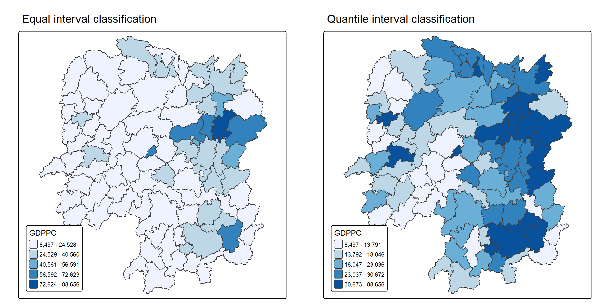
Two questions can be put to these maps before any statistic is computed, so that the statistics can later be checked against the expectation the maps create.
The first is whether the maps reveal outliers or clusters. The quantile map shows a dark north-eastern corner around Changsha and a broad light band across the west and south, which is the visual impression of clustering. What it cannot show is an outlier, meaning a county that differs sharply from its own surroundings, because a choropleth encodes each county’s value and not its relation to its neighbours. A poor county with rich neighbours is drawn in a light colour indistinguishable from a poor county in a poor region.
The second is whether they indicate hot or cold spots. They suggest candidates but establish nothing. A hot spot is a statistically significant concentration, and significance is exactly what a choropleth cannot display. Both questions are the reason the rest of this document exists.
Local Indicators of Spatial Association (LISA)
LISA statistics evaluate the existence of clusters and outliers in the spatial arrangement of a variable. For GDP per capita in Hunan, a local cluster means a county whose value and whose neighbours’ values are jointly higher, or jointly lower, than chance alone would produce.
The decomposition is easier to follow if stated before the computation. Local Moran’s I for county i is the product of that county’s standardised deviation from the provincial mean and the weighted average of its neighbours’ standardised deviations. Two consequences follow directly from that product. A positive Ii means county and neighbourhood fall on the same side of the mean, both high or both low, which is a cluster. A negative Ii means they fall on opposite sides, which is a spatial outlier.
The four combinations are the four quadrants of the Moran scatterplot drawn later: High-High, Low-Low, Low-High and High-Low, where the first term is the county’s own value and the second its neighbourhood’s.
Computing Contiguity Spatial Weights
st_contiguity() of sfdep builds a neighbours list from regions with contiguous boundaries, with the same queen argument and the same default of TRUE as poly2nb() of spdep. st_weights() then derives the weights from that list, taking three arguments:
nb, a neighbour list,style, defaulting to"W"for row-standardised weights and also accepting"B","C","U","minmax"and"S"with the meanings set out in Exercise 5a, andallow_zero, which assigns a lagged value of zero to zones with no neighbours whenTRUE.
Both are computed inside a single mutate(), so the neighbour list and the weights become list columns of the hunan table rather than separate objects. .before = 1 places them at the front:
wm_q <- hunan %>%
mutate(nb = st_contiguity(geometry),
wt = st_weights(nb, style = "W"),
.before = 1)The neighbour list is revealed in the usual way:
summary(wm_q$nb)Neighbour list object:
Number of regions: 88
Number of nonzero links: 448
Percentage nonzero weights: 5.785124
Average number of links: 5.090909
Link number distribution:
1 2 3 4 5 6 7 8 9 11
2 2 12 16 24 14 11 4 2 1
2 least connected regions:
30 65 with 1 link
1 most connected region:
85 with 11 linksThe report is identical to the one poly2nb() produced in Exercise 5a: 88 area units, 448 links, an average of 5.09, a most connected unit with 11 neighbours and two units with one neighbour each. That is the expected result, since sfdep is calling spdep underneath, and confirming it matters because everything below is computed on this structure.
Row-standardised weights matrix
No further code is needed here. style = "W" in the call above has already row-standardised the weights, assigning each of a county’s neighbours the fraction 1/(number of neighbours) so that each row sums to one. The trade-off is the one described in Exercise 5a: counties on the provincial edge base their lagged values on fewer neighbours, each of which is therefore given more weight. It bears more directly on a local statistic than on a global one, since here each county produces its own score rather than contributing to a single average.
Computing local Moran’s I
local_moran() of sfdep computes Ii for every county from the variable, the neighbour list and the weights. The nsim argument adds a conditional permutation test: for each county in turn, the values of all other counties are reshuffled and Ii recomputed, which builds a reference distribution for that county specifically.
The seed is set first, since the permutation p-values would otherwise change on every render:
set.seed(1234)lisa <- wm_q %>%
mutate(local_moran = local_moran(
GDPPC, nb, wt, nsim = 99),
.before = 1) %>%
unnest(local_moran)local_moran() returns a data frame, which mutate() stores as a single packed column, and unnest() unpacks it into ordinary columns of lisa:
glimpse(lisa)Rows: 88
Columns: 21
$ ii <dbl> -1.468468e-03, 2.587817e-02, -1.198765e-02, 1.022468e-03,…
$ eii <dbl> 1.472724e-03, -1.337157e-02, 2.542108e-03, -9.522978e-05,…
$ var_ii <dbl> 5.187992e-04, 1.413972e-02, 1.109689e-01, 4.768012e-06, 1…
$ z_ii <dbl> -0.12912898, 0.33007787, -0.04361717, 0.51186518, 0.33919…
$ p_ii <dbl> 8.972556e-01, 7.413411e-01, 9.652096e-01, 6.087454e-01, 7…
$ p_ii_sim <dbl> 0.80, 0.98, 0.92, 0.56, 0.58, 0.86, 0.06, 0.12, 0.02, 0.2…
$ p_folded_sim <dbl> 0.40, 0.49, 0.46, 0.28, 0.29, 0.43, 0.03, 0.06, 0.01, 0.1…
$ skewness <dbl> -1.0560692, -1.0439328, 0.8429629, 0.8423923, 1.3810032, …
$ kurtosis <dbl> 1.31492710, 0.76654076, 0.12251048, 0.37514702, 2.3883407…
$ mean <fct> Low-High, Low-Low, High-Low, High-High, High-High, High-L…
$ median <fct> High-High, High-High, High-High, High-High, High-High, Hi…
$ pysal <fct> Low-High, Low-Low, High-Low, High-High, High-High, High-L…
$ nb <nb> <2, 3, 4, 57, 85>, <1, 57, 58, 78, 85>, <1, 4, 5, 85>, <1,…
$ wt <list> <0.2, 0.2, 0.2, 0.2, 0.2>, <0.2, 0.2, 0.2, 0.2, 0.2>, <0…
$ NAME_2 <chr> "Changde", "Changde", "Changde", "Changde", "Changde", "C…
$ ID_3 <int> 21098, 21100, 21101, 21102, 21103, 21104, 21109, 21110, 2…
$ NAME_3 <chr> "Anxiang", "Hanshou", "Jinshi", "Li", "Linli", "Shimen", …
$ ENGTYPE_3 <chr> "County", "County", "County City", "County", "County", "C…
$ County <chr> "Anxiang", "Hanshou", "Jinshi", "Li", "Linli", "Shimen", …
$ GDPPC <dbl> 23667, 20981, 34592, 24473, 25554, 27137, 63118, 62202, 7…
$ geometry <POLYGON [m]> POLYGON ((22320.48 3301894,..., POLYGON ((35522.9…The columns are:
| Column | Meaning |
|---|---|
ii |
The local Moran’s I statistic for the county |
eii |
Its expectation under the randomisation hypothesis |
var_ii |
Its variance under the randomisation hypothesis |
z_ii |
The standard deviate, (ii − eii) / sqrt(var_ii) |
p_ii |
The analytical p-value, from z_ii against a normal distribution |
p_ii_sim |
The p-value from the nsim conditional permutations |
p_folded_sim |
The one-sided folded version of the simulated p-value |
skewness, kurtosis |
Shape of each county’s own permutation distribution |
mean, median, pysal |
Three labellings of the county into one of the four quadrants, differing in whether the split between high and low is taken at the mean, at the median, or by the rule used in PySAL |
Two of these need care. eii is not the same for every county, unlike the global case where the expectation is −1/(n−1) for all, because a local expectation depends on how many neighbours the county has. And p_ii and p_ii_sim are different tests rather than two printings of the same one. The first assumes local normality; the second assumes nothing but is granular to 1/(nsim + 1) = 0.01 with 99 simulations. The textbook maps p_ii, and that choice is examined where the LISA map is built.
Mapping the local Moran’s I
Three maps follow: the statistic, its p-values, and the two side by side. The statistic alone is not interpretable, since a large Ii in a county whose permutation distribution is wide means nothing, so the pair is what carries the result.
Mapping local Moran’s I values
tm_shape(lisa) +
tm_polygons(fill = "ii",
fill.scale = tm_scale_intervals(
style = "pretty",
n = 5,
values = "brewer.RdBu"),
fill.legend = tm_legend(
title = "Local Moran's I",
position = tm_pos_out())) +
tm_borders(fill_alpha = 0.5) +
tm_title("Local Moran's I of GDPPC (Queen's method)")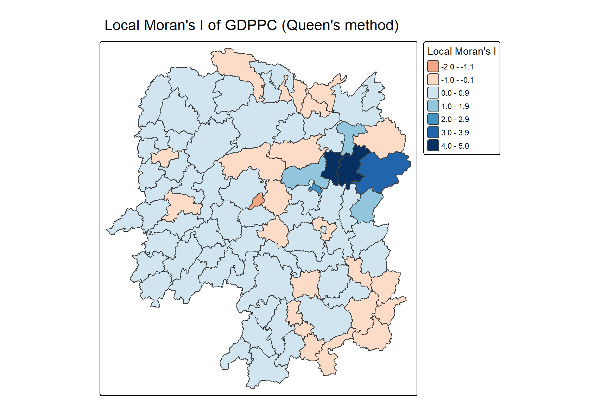
Values run from −1.79 to 4.90. The diverging red-blue scale suits a statistic with a meaningful zero: red counties have positive Ii and belong to clusters, blue counties have negative Ii and are candidate outliers. Most of the province sits in the pale middle class, which is what the decomposition of a moderate global I looks like, with a few counties carrying most of it.
Mapping local Moran’s I p-values
The map above shows evidence of both positive and negative Ii, but nothing about which of those values could have arisen by chance. The p-values answer that:
tm_shape(lisa) +
tm_polygons(fill = "p_ii",
fill.scale = tm_scale_intervals(
breaks = c(-Inf, 0.001, 0.01, 0.05, 0.1, Inf),
values = "-brewer.Reds"),
fill.legend = tm_legend(
title = "p-value",
position = tm_pos_out())) +
tm_borders(fill_alpha = 0.5) +
tm_title("p-values of local Moran's I of GDPPC (Queen's method)")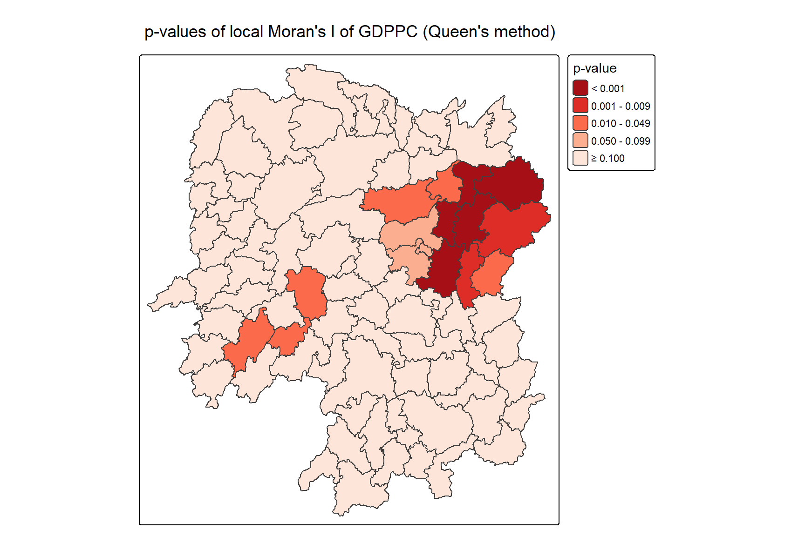
The breaks are set explicitly at the conventional thresholds rather than left to an algorithm, and the palette is reversed with the leading minus in "-brewer.Reds" so that the smallest p-values are the darkest. Only 13 of the 88 counties fall below 0.05.
Mapping both local Moran’s I values and p-values
Neither map is readable alone, so they are drawn together:
ii.map <- tm_shape(lisa) +
tm_polygons(fill = "ii",
fill.scale = tm_scale_intervals(
style = "pretty",
n = 5,
values = "brewer.RdBu"),
fill.legend = tm_legend(
title = "Local Moran's I",
position = tm_pos_in("left", "bottom"))) +
tm_borders(fill_alpha = 0.5) +
tm_title("Local Moran's I of GDPPC (Queen's method)")
p_ii.map <- tm_shape(lisa) +
tm_polygons(fill = "p_ii",
fill.scale = tm_scale_intervals(
breaks = c(-Inf, 0.001, 0.01, 0.05, 0.1, Inf),
values = "-brewer.Reds"),
fill.legend = tm_legend(
title = "p-value",
position = tm_pos_in("left", "bottom"))) +
tm_borders(fill_alpha = 0.5) +
tm_title("p-values of local Moran's I of GDPPC (Queen's method)")
tmap_arrange(ii.map, p_ii.map, asp = 1, ncol = 2)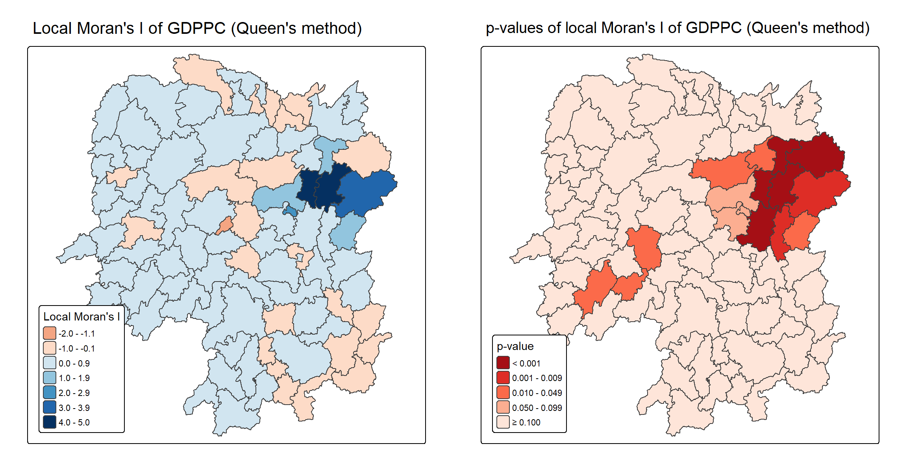
Together the pair shows that magnitude and significance do not coincide. The strongly red counties in the north-east are also strongly dark on the right, so those results stand. Several counties with visible Ii elsewhere on the map are pale on the right, and those are not findings. The LISA map built below keeps only the counties that are dark in both.
Preparing and Visualising LISA Map
A LISA cluster map colours the significant counties by the type of association they exhibit, combining the sign of Ii with the county’s position relative to its neighbourhood. The Moran scatterplot is where that combination is defined, so it comes first.
Plotting Moran scatterplot
The scatterplot puts each county’s value on the horizontal axis and the average of its neighbours’ values, the spatial lag, on the vertical. st_lag() of sfdep computes the lag from the neighbour list and weights:
lisa <- lisa %>%
mutate(lag_GDPPC = st_lag(
GDPPC, nb, wt),
.before = 1) %>%
unnest(lag_GDPPC)ggplot(data = lisa,
aes(x = GDPPC,
y = lag_GDPPC)) +
geom_point() +
geom_smooth(method = "lm",
se = FALSE,
color = "red") +
labs(x = "GDPPC",
y = "Spatial Lag of GDPPC",
title = "Moran Scatterplot") +
theme_minimal()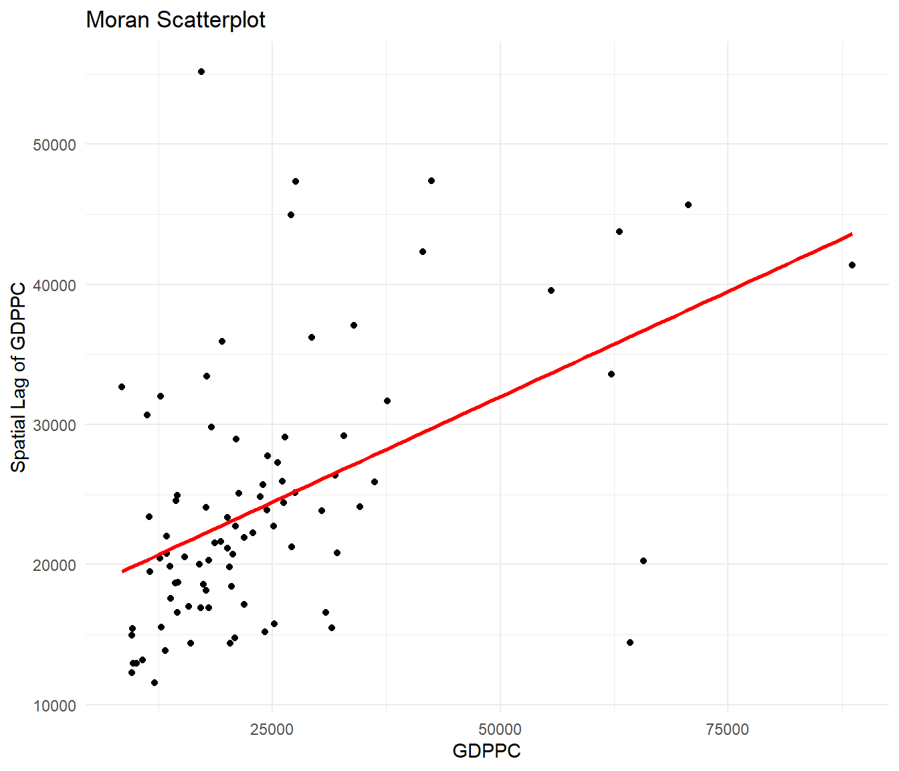
The slope of that fitted line is Moran’s I itself, the 0.3007 of Exercise 5a recovered as a regression coefficient. The plot is otherwise not very informative, because the quadrants that give it its meaning are not drawn. Adding the two means as reference lines and colouring by the quadrant label fixes that:
ggplot(data = lisa,
aes(x = GDPPC,
y = lag_GDPPC,
color = mean)) +
geom_point(size = 2) +
geom_smooth(method = "lm",
se = FALSE,
color = "black") +
geom_hline(yintercept = mean(lisa$lag_GDPPC), lty = 2) +
geom_vline(xintercept = mean(lisa$GDPPC), lty = 2) +
scale_color_manual(
values = c("High-High" = "red",
"Low-Low" = "blue",
"Low-High" = "lightblue",
"High-Low" = "pink")) +
labs(x = "GDPPC",
y = "Spatial Lag of GDPPC",
title = "Moran Scatterplot with LISA Quadrants") +
theme_minimal()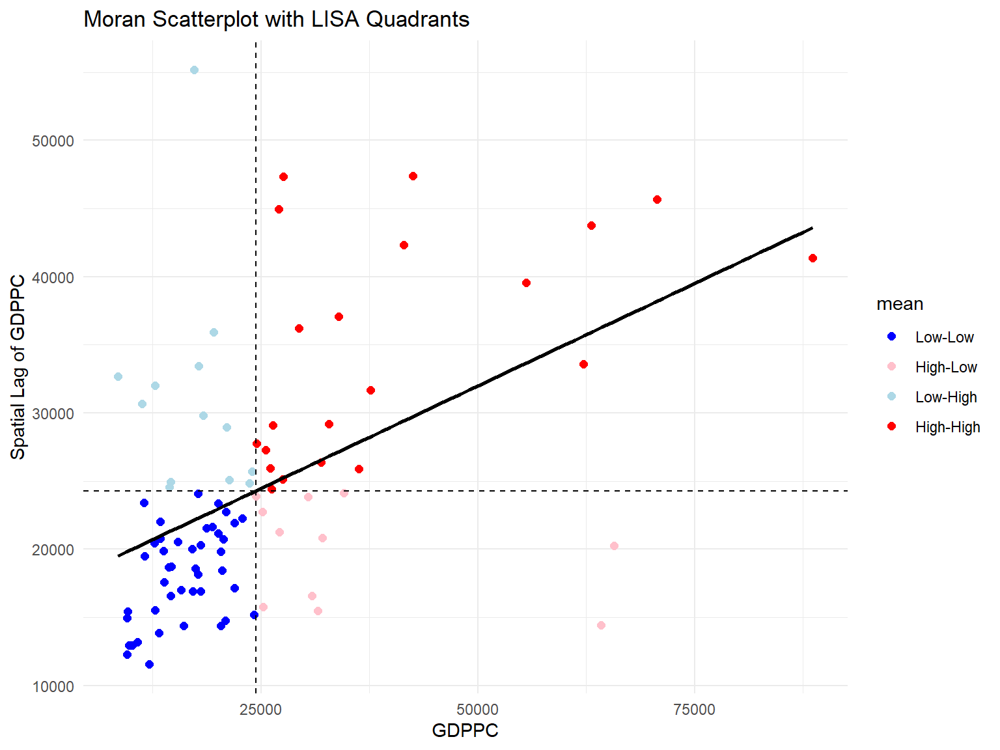
The dashed lines split the plot at the mean of each axis, and each quadrant is a type of local association. The upper right holds counties with high GDPPC whose neighbours also have high GDPPC, the High-High locations, which are the cluster of prosperity. The lower left is its mirror, Low-Low. The two off-diagonal quadrants hold spatial outliers: Low-High is a poor county among rich neighbours, High-Low a rich county among poor ones.
Across all 88 counties the quadrants hold 43 Low-Low, 21 High-High, 13 Low-High and 11 High-Low. Every county falls into one of them, so quadrant membership on its own is not a result; significance has still to be applied.
The High-High points also show why the plot is hard to read at this scale. Changsha at 88,656 sits far to the right of everything else, compressing the remaining 87 counties into the left third of the panel. The standardised version below is the remedy.
Plotting Moran scatterplot with standardised variable
scale() centres a variable by subtracting its mean, omitting NAs, and scales it by dividing by its standard deviation. as.vector() is wrapped around the result because scale() returns a one-column matrix, which does not map cleanly into a data frame column:
lisa <- lisa %>%
mutate(z_GDPPC = as.vector(scale(GDPPC)),
z_lag_GDPPC = as.vector(scale(lag_GDPPC)),
.before = 1)ggplot(data = lisa,
aes(x = z_GDPPC,
y = z_lag_GDPPC,
color = mean)) +
geom_point(size = 2) +
geom_smooth(method = "lm",
se = FALSE,
color = "black") +
geom_hline(yintercept = mean(lisa$z_lag_GDPPC), lty = 2) +
geom_vline(xintercept = mean(lisa$z_GDPPC), lty = 2) +
scale_color_manual(
values = c("High-High" = "red",
"Low-Low" = "blue",
"Low-High" = "lightblue",
"High-Low" = "pink")) +
labs(x = "Standardised GDPPC",
y = "Standardised Spatial Lag of GDPPC",
title = "Standardised Moran Scatterplot with LISA Quadrants") +
theme_minimal()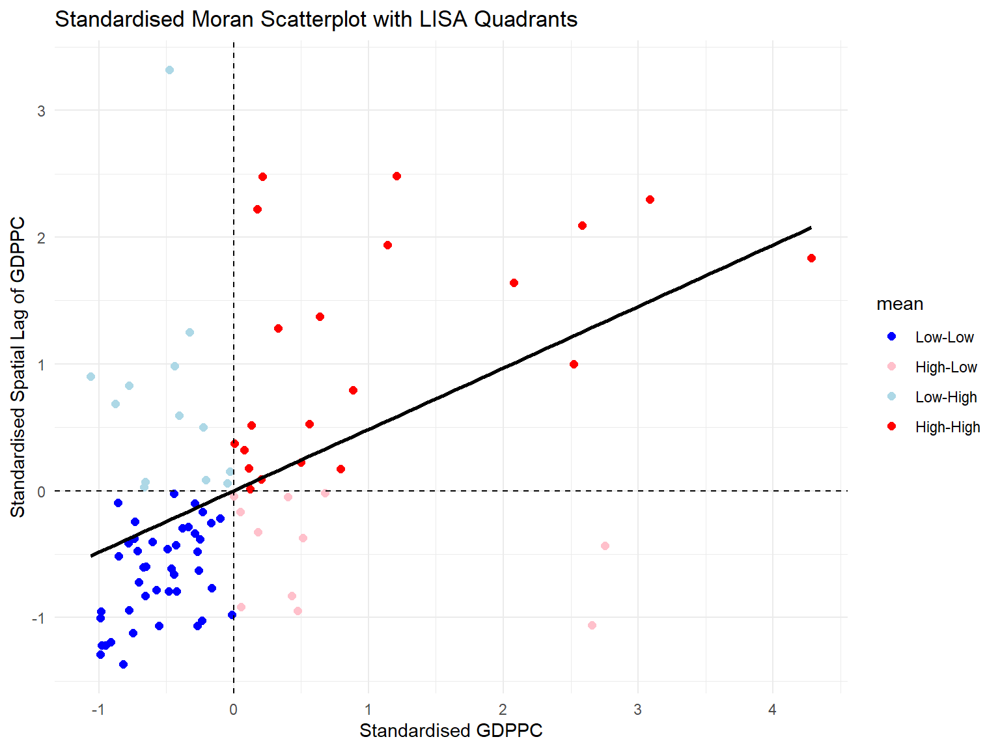
Standardising puts both axes in units of standard deviations and moves the dividing lines to zero, so the quadrant boundaries now coincide with the axes and distance from the origin becomes readable as unusualness. Changsha is revealed as roughly four standard deviations out on both axes, the single most influential observation in the whole analysis, local and global alike.
Preparing LISA map classes
The ingredients of a LISA cluster map are now all present: the spatially lagged variable, centred on its mean; the local Moran’s I, centred on its own; and a significance level at which to cut. Only the last has still to be chosen:
signif <- 0.05Five per cent is the conventional threshold and is used here, with one caveat worth recording. Eighty-eight tests are being read from one table, so at a nominal 5% roughly four counties would be expected to clear the bar by chance alone. Thirteen do. The strongest results survive any correction comfortably, with Changsha at 2.0 × 10-5 and Xiangtan at 1.5 × 10-5, but the counties sitting just under 0.05 should be read as suggestive rather than established.
Plotting and visualising LISA map
The quadrant labels are already stored in the mean, median and pysal fields of lisa. A new field is derived from one of them, replacing the label with Insignificant wherever the p-value fails the threshold:
lisa <- lisa %>%
mutate(
LISA_cluster = ifelse(
p_ii < 0.05,
as.character(mean),
"Insignificant"),
LISA_cluster = factor(
LISA_cluster,
levels = c("Insignificant", "Low-Low", "Low-High", "High-Low", "High-High")
)
)The levels are set explicitly rather than left to alphabetical order, so that the legend reads from insignificant through the two outlier types to the two cluster types, and so that the colours assigned below line up with the labels they are meant to carry.
lisa_map <- tm_shape(lisa) +
tm_polygons(
fill = "LISA_cluster",
fill.scale = tm_scale_categorical(
values = c(
"grey80", # Insignificant
"blue", # Low-Low
"lightblue", # Low-High
"pink", # High-Low
"red" # High-High
)
),
fill.legend = tm_legend(
title = "LISA Cluster",
position = tm_pos_in("left", "bottom"))
) +
tm_borders() +
tm_title("Local Moran's I Clusters (p < 0.05)")
lisa_map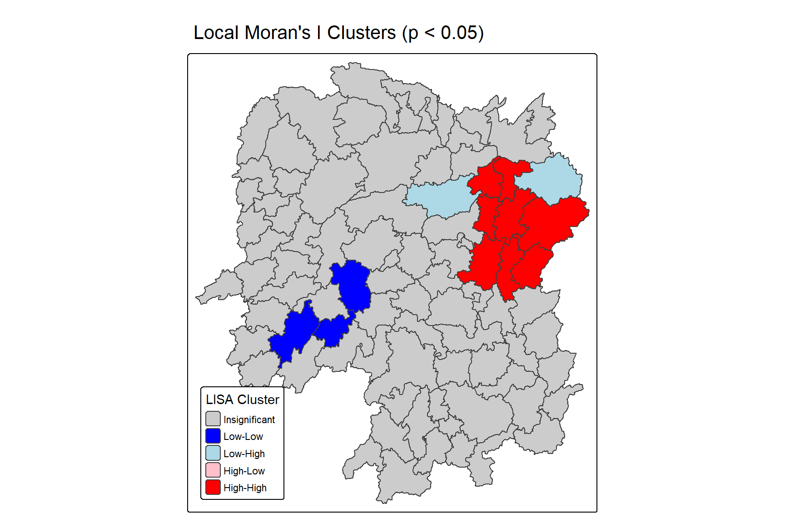
Thirteen of the 88 counties are significant at 5%, and they fall into three of the four classes.
Eight High-High counties form a single contiguous block in the north-east: Changsha (GDPPC 88,656), Wangcheng (70,666), Liuyang (63,118), Miluo (42,497), Liling (41,491), Xiangyin (33,983), Zhuzhou (27,589) and Xiangtan (27,060). This is the answer to question 3. The cluster is not a scatter of rich counties across the province but one economic region centred on the provincial capital, and it accounts for most of the global Moran’s I found in Exercise 5a.
Three Low-Low counties, Suining (16,069), Wugang (12,112) and Longhui (9,572), sit together in the south-west. Poverty clusters as well as wealth does, but the evidence for it here is weaker: all three have p-values between 0.03 and 0.04, against six of the eight High-High counties below 0.01.
Two Low-High outliers appear, and they are the most interesting cases on the map. Pingjiang (17,252, p = 1.15 × 10-4) and Taojiang (19,509, p = 0.044) are poor counties adjacent to the rich north-eastern block. They are invisible on the choropleths at the top of this document, because a choropleth cannot encode a county’s relation to its surroundings, and Pingjiang’s is the fourth strongest p-value on the whole map.
No High-Low outlier is significant. Eleven counties fall in that quadrant, but not one survives the test, so Hunan has no isolated rich county surrounded by poor neighbours strong enough to register.
The asymmetry between the two ends is the substantive finding. Wealth in Hunan is concentrated and sharply bounded, with the High-High block ending abruptly and two of its immediate neighbours appearing as significant Low-High outliers. Poverty is diffuse by comparison, with only three counties in a broad, generally poor west and south rising to significance. That is the pattern of a capital-centred growth pole rather than of an even gradient.
One choice in the recipe above deserves a second look. p_ii is the analytical p-value, derived by referring z_ii to a normal distribution, which assumes each county’s local statistic is normally distributed. The skewness column shows that assumption to be doubtful for many counties. The permutation p-value p_ii_sim makes no such assumption, and with nsim = 99 it classifies 16 counties as significant instead of 13, with a different composition: 8 Low-Low, 6 High-High, 1 Low-High and 1 High-Low. The two agree on the core of the north-eastern cluster and disagree at the margins, which is where a p-value near 0.05 should be expected to be fragile.
Two things drive the difference. p_ii_sim can only take values that are multiples of 1/(99 + 1) = 0.01, so it is a coarse instrument, and the analytical test is the more powerful of the two when its assumptions hold. Raising nsim to 499 or 999 would settle the disagreement, at a cost in render time. The stable conclusion is the one both tests support: a significant High-High block in the north-east, and significant Low-Low counties in the south-west.
Hot Spots and Cold Spots Analysis (HCSA)
Hot and cold spot analysis identifies statistically significant concentrations of high values and of low values. A hot spot is an area where high values are concentrated and surrounded by other high values, and a cold spot is its opposite. HCSA uses the Getis-Ord Gi* statistic to decide whether an observed concentration is significant or could have arisen by chance.
The difference from LISA lies in what the statistic sums. Local Moran’s I is a product of deviations, so it detects both clusters and outliers and distinguishes them by sign. Gi* is a ratio of the sum of values in a neighbourhood to the sum over the whole study area, so it has no way of expressing an outlier and measures only whether a neighbourhood’s total is unusually high or unusually low. The star in Gi* marks the variant that includes the county itself in its own neighbourhood, which is required if the statistic is to describe the place rather than only its surroundings.
The analysis has four steps: derive a spatial weight matrix, compute the Gi* statistics, map them, and communicate the results.
Deriving distance weight matrix
Where spatial autocorrelation was computed on units sharing a border, Gi* is defined here on neighbours identified by distance. Three kinds of distance-based proximity matrix are in common use:
- a fixed distance weight matrix, where every county’s neighbours are those within a fixed radius,
- an adaptive distance weight matrix, where every county has the same number of neighbours regardless of distance, and
- inverse distance weights, where all neighbours count but nearer ones count for more.
Computing fixed distance weights
A fixed radius has to be chosen, and the defensible choice is the smallest radius at which no county is left without a neighbour. critical_threshold() of sfdep computes exactly that, the largest first-nearest-neighbour distance in the layer:
ct <- critical_threshold(st_geometry(hunan))
ct[1] 60799.91The threshold is 60,799.91 metres, so the largest distance from any county to its nearest neighbour is about 60.8 km. Using it as the upper bound of the distance band guarantees that every unit has at least one neighbour.
Run interactively, critical_threshold() also emits a warning that the first-nearest-neighbour object it builds internally has 25 sub-graphs; the document’s warning: false setting keeps it out of the output above. It is expected rather than a defect, since linking every county only to its single closest partner produces mutual pairs and short chains instead of one connected network. That graph serves purely as a ruler for measuring distances, never as a weights matrix, so its disconnection has no consequence. Exercise 4 makes the same point.
st_dist_band() builds the neighbour list within that radius, include_self() adds each county to its own list, and st_weights() row-standardises:
hunan_fdw <- hunan %>%
mutate(nb = include_self(
st_dist_band(
st_geometry(geometry),
upper = ct)),
wt = st_weights(nb,
style = "W"),
.before = 1)include_self() is not optional for Gi*. Without it the statistic computed would be plain Gi, which describes a county’s surroundings while excluding the county itself, so a rich county with poor neighbours would score low. That is not what a hot spot map is meant to show.
st_dist_band() also notes, in a console message suppressed here, that it was given polygons and is using a point on surface. A distance band needs points, and sfdep derives them with st_point_on_surface() rather than st_centroid(). The representative point is then guaranteed to lie inside its own polygon, as a centroid need not for the concave shapes some of these counties have.
summary(hunan_fdw$nb)Neighbour list object:
Number of regions: 88
Number of nonzero links: 396
Percentage nonzero weights: 5.113636
Average number of links: 4.5
Link number distribution:
2 3 4 5 6 7
10 11 17 30 15 5
10 least connected regions:
7 30 32 53 56 65 67 71 75 85 with 2 links
5 most connected regions:
12 28 45 50 52 with 7 linksThe list has 396 links and an average of 4.5 per county, including each county itself, so the average county has 3.5 true neighbours within 60.8 km. That is well below the 5.09 of Queen contiguity. Ten counties have the minimum of two links, meaning a single genuine neighbour, and the most connected have seven. The variation is the defining property of a fixed distance rule: a radius generous enough to reach the most isolated county is still sparse where the counties are large.
Computing adaptive distance weights
A fixed distance matrix gives densely settled areas, usually urban, more neighbours than sparsely settled ones, usually rural. Having many neighbours smooths the neighbour relationship over more units, so the degree of smoothing varies across the map for reasons unrelated to the variable being studied. For Gi*, which sums values over a neighbourhood, an unequal count also means unequal variance in the statistic itself.
st_knn() fixes the count instead of the radius:
hunan_adw <- hunan %>%
mutate(nb = include_self(
st_knn(
st_geometry(geometry),
k = 6)),
wt = st_weights(
nb, style = "W"),
.before = 1)summary(hunan_adw$nb)Neighbour list object:
Number of regions: 88
Number of nonzero links: 616
Percentage nonzero weights: 7.954545
Average number of links: 7
Non-symmetric neighbours list
Link number distribution:
7
88
88 least connected regions:
1 2 3 4 5 6 7 8 9 10 11 12 13 14 15 16 17 18 19 20 21 22 23 24 25 26 27 28 29 30 31 32 33 34 35 36 37 38 39 40 41 42 43 44 45 46 47 48 49 50 51 52 53 54 55 56 57 58 59 60 61 62 63 64 65 66 67 68 69 70 71 72 73 74 75 76 77 78 79 80 81 82 83 84 85 86 87 88 with 7 links
88 most connected regions:
1 2 3 4 5 6 7 8 9 10 11 12 13 14 15 16 17 18 19 20 21 22 23 24 25 26 27 28 29 30 31 32 33 34 35 36 37 38 39 40 41 42 43 44 45 46 47 48 49 50 51 52 53 54 55 56 57 58 59 60 61 62 63 64 65 66 67 68 69 70 71 72 73 74 75 76 77 78 79 80 81 82 83 84 85 86 87 88 with 7 linksEvery county now has exactly seven links, six nearest neighbours plus itself, for 616 in total. The report notes that the list is non-symmetric: county i being among the six closest to j does not oblige j to be among the six closest to i. That is the price of a fixed count.
Computing inverse distance weights
The third kind keeps all neighbours but weights each by the reciprocal of the distance between them, so that influence decays with separation instead of stopping at a boundary. st_inverse_distance() of sfdep computes these from a neighbour list and the geometry, with scale fixing the units:
hunan_idw <- hunan %>%
mutate(nb = include_self(
st_dist_band(
st_geometry(geometry),
upper = ct)),
wt = st_inverse_distance(nb,
geometry,
scale = 1,
alpha = 1),
.before = 1)alpha = 1 makes the decay linear in distance, and a larger exponent concentrates weight on the closest neighbours. The fixed distance list is used below, so this object is built for completeness rather than carried forward. For Gi* it would need adjusting first: the self-link added by include_self() has a distance of zero, and st_inverse_distance() returns a weight of zero for it, so a county would contribute nothing to its own statistic. That is the opposite of what the star in Gi* is for.
Computing local Gi*
local_gstar_perm() of sfdep computes the statistic with a conditional permutation test, in the same form as local_moran() above. The seed is set again for reproducibility:
set.seed(1234)HCSA_fdw <- hunan_fdw %>%
mutate(
gistar = local_gstar_perm(
GDPPC, nb, wt, nsim = 99),
.before = 1) %>%
unnest(gistar)glimpse(HCSA_fdw)Rows: 88
Columns: 19
$ gi_star <dbl> 0.38306332, -0.27278122, 0.36406563, 0.41149401, 0.217412…
$ cluster <fct> Low, Low, High, High, High, High, High, High, High, Low, …
$ e_gi <dbl> 0.011126674, 0.011220022, 0.012549680, 0.011006501, 0.011…
$ var_gi <dbl> 7.879381e-06, 1.047199e-05, 8.583347e-06, 7.189236e-06, 7…
$ std_dev <dbl> 0.45989313, -0.24311846, 0.01899528, 0.59856990, 0.057030…
$ p_value <dbl> 6.455929e-01, 8.079136e-01, 9.848449e-01, 5.494597e-01, 9…
$ p_sim <dbl> 0.50, 0.92, 0.80, 0.50, 0.86, 0.88, 0.04, 0.06, 0.02, 0.8…
$ p_folded_sim <dbl> 0.25, 0.46, 0.40, 0.25, 0.43, 0.44, 0.02, 0.03, 0.01, 0.4…
$ skewness <dbl> 1.7412179, 0.8164762, 1.0825769, 1.0430861, 1.1444807, 1.…
$ kurtosis <dbl> 5.20621649, -0.30006744, 0.99723972, 1.40372931, 2.453209…
$ nb <nb> <1, 3, 4, 5, 57, 64>, <2, 58, 78, 85>, <1, 3, 4, 5>, <1, 3…
$ wt <list> <0.1666667, 0.1666667, 0.1666667, 0.1666667, 0.1666667, …
$ NAME_2 <chr> "Changde", "Changde", "Changde", "Changde", "Changde", "C…
$ ID_3 <int> 21098, 21100, 21101, 21102, 21103, 21104, 21109, 21110, 2…
$ NAME_3 <chr> "Anxiang", "Hanshou", "Jinshi", "Li", "Linli", "Shimen", …
$ ENGTYPE_3 <chr> "County", "County", "County City", "County", "County", "C…
$ County <chr> "Anxiang", "Hanshou", "Jinshi", "Li", "Linli", "Shimen", …
$ GDPPC <dbl> 23667, 20981, 34592, 24473, 25554, 27137, 63118, 62202, 7…
$ geometry <POLYGON [m]> POLYGON ((22320.48 3301894,..., POLYGON ((35522.9…The gi_star column holds the statistic in standardised form, so it is read like a z-score: values well above zero mark high-value concentrations, values well below zero mark low-value ones. It ranges here from −1.83 to 5.81. p_sim is the permutation p-value and p_value its analytical counterpart. The cluster column is examined below, where it matters.
Preparing and Visualising HCSA Map
Mapping Gi* with fixed distance weights
tm_shape(HCSA_fdw) +
tm_polygons(fill = "gi_star",
fill.scale = tm_scale_intervals(
style = "pretty",
n = 6,
values = "brewer.rd_bu"),
fill.legend = tm_legend(
title = "Gi*",
position = tm_pos_out())) +
tm_borders(fill_alpha = 0.5) +
tm_title("Gi* of GDPPC (Fixed Bandwidth d = 60799.91m)")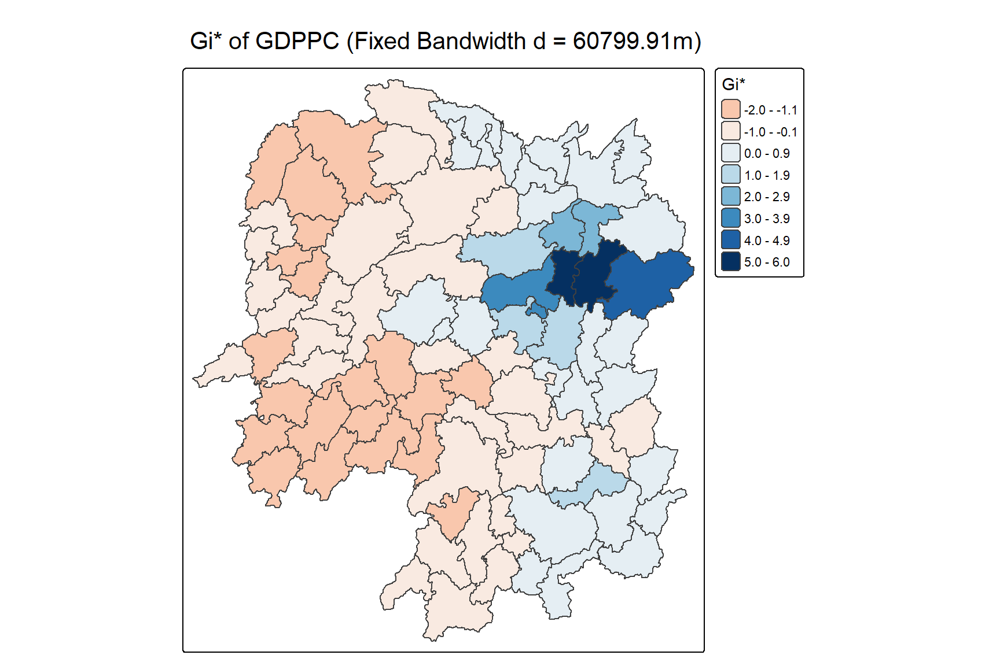
The high values concentrate in the north-east, in the same place local Moran’s I put its High-High block. The map is smoother than the LISA statistic map, because Gi* sums over a neighbourhood rather than multiplying deviations, so it averages local contrast rather than amplifying it.
Mapping local Gi* p-values
The choropleth above shows both high and low Gi*, but as before the values have to be read against their significance:
tm_shape(HCSA_fdw) +
tm_polygons(fill = "p_sim",
fill.scale = tm_scale_intervals(
breaks = c(-Inf, 0.001, 0.01, 0.05, 0.1, Inf),
values = "-brewer.Reds"),
fill.legend = tm_legend(
title = "simulated p-value",
position = tm_pos_out())) +
tm_borders(fill_alpha = 0.5) +
tm_title("p-values of local Gi* of GDPPC (Fixed distance)")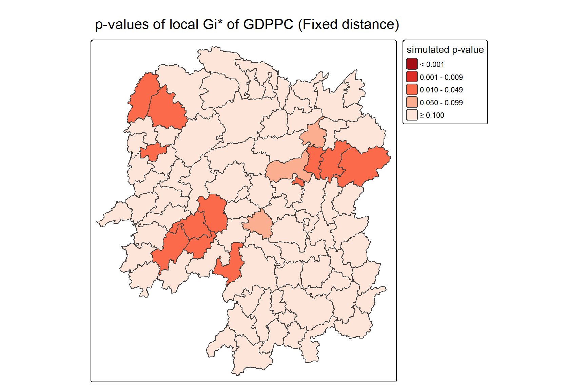
The map has only two occupied classes, for a mechanical rather than a substantive reason. With nsim = 99 the smallest attainable p-value is 1/(99 + 1) = 0.01, so the class below 0.001 is empty by construction and every significant county falls into the 0.01 to 0.05 band. The breaks are kept as written for comparability with the LISA map, but on this data set they carry less information than they appear to. Raising nsim would be the fix.
Mapping both Gi* values and p-values
Gi_star_map <- tm_shape(HCSA_fdw) +
tm_polygons(fill = "gi_star",
fill.scale = tm_scale_intervals(
style = "pretty",
n = 5,
values = "-brewer.rd_bu"),
fill.legend = tm_legend(
title = "local Gi*",
position = tm_pos_in("left", "bottom"))) +
tm_borders(fill_alpha = 0.5) +
tm_title("Local Gi* of GDPPC")
p_values_map <- tm_shape(HCSA_fdw) +
tm_polygons(fill = "p_sim",
fill.scale = tm_scale_intervals(
breaks = c(0, 0.001, 0.01, 0.05, 0.1, 1),
values = "-brewer.reds"),
fill.legend = tm_legend(
title = "p-value",
position = tm_pos_in("left", "bottom"))) +
tm_borders(fill_alpha = 0.5) +
tm_title("p-values of local Gi* of GDPPC (fixed distance)")
tmap_arrange(Gi_star_map, p_values_map, asp = 1, ncol = 2)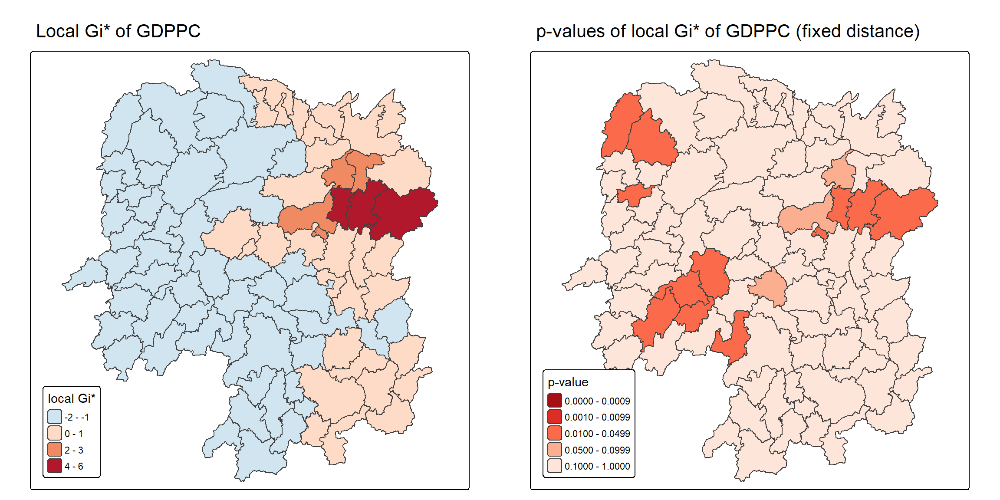
The palette on the left is reversed relative to the previous map, "-brewer.rd_bu" rather than "brewer.rd_bu", so high Gi* now reads blue rather than red. The pair shows that the dark cells on the right, the significant ones, sit at both ends of the left-hand scale. There are significant low-value neighbourhoods in the west as well as significant high-value ones in the north-east.
Plotting and visualising HCSA Map
The classes are derived from the cluster field, with everything failing the 5% threshold reassigned to Insignificant:
HCSA_fdw <- HCSA_fdw %>%
mutate(HCSA_cluster = case_when(
p_sim > 0.05 ~ "Insignificant",
p_sim <= 0.05 & cluster == "High" ~ "Hot spot",
p_sim <= 0.05 & cluster == "Low" ~ "Cold spot",
TRUE ~ "Other"),
HCSA_cluster = factor(
HCSA_cluster,
levels = c("Insignificant", "Hot spot", "Cold spot")
),
.before = 1
)HCSA_map <- tm_shape(HCSA_fdw) +
tm_polygons(
fill = "HCSA_cluster",
fill.scale = tm_scale_categorical(
values = c(
"grey80", # Insignificant
"red", # Hot spot
"blue" # Cold spot
)
),
fill.legend = tm_legend(
title = "HCSA Cluster",
position = tm_pos_in("left", "bottom"))
) +
tm_borders() +
tm_title("HCSA Clusters (p < 0.05)")
HCSA_map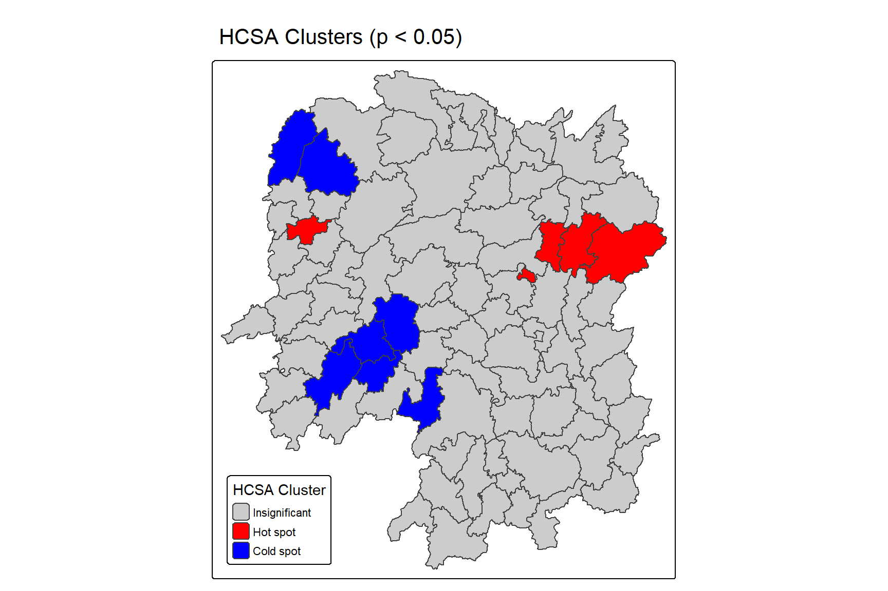
Placing the statistic and the classification side by side shows how the continuous surface has been reduced to three classes:
tmap_arrange(Gi_star_map, HCSA_map, asp = 1, ncol = 2)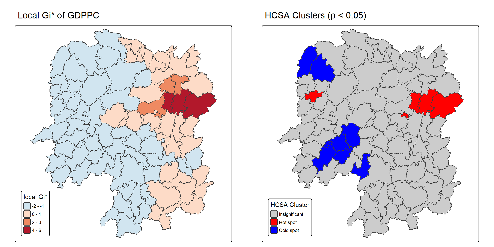
Twelve of the 88 counties are significant at 5%, and they divide into five hot spots and seven cold spots.
The hot spots are Wangcheng (Gi* = 5.81), Changsha (5.71), Liuyang (4.91) and Shaoshan (3.77). Three of the four are also in the LISA High-High block. Shaoshan is an addition, and the outer ring of that block, meaning Miluo, Liling, Xiangyin, Zhuzhou and Xiangtan, drops out. The fifth significant county, Jishou, is discussed below.
The cold spots are Dongan (Gi* = −1.22), Longshan (−1.41), Wugang (−1.55), Dongkou (−1.64), Suining (−1.72), Yongshun (−1.78) and Longhui (−1.83), spread across the west and south-west. Three of them, Wugang, Suining and Longhui, are the same counties the LISA map identified as Low-Low, and the other four are additions.
Two structural points come out of the comparison with the LISA map. The first is that the magnitudes are asymmetric: the strongest hot spot scores 5.81 while the strongest cold spot reaches only −1.83. Gi* is bounded below in a way it is not bounded above, because the sum of a neighbourhood of low values can fall only so far short of the study-area mean, while a single very large value can push it arbitrarily high. The province has one extreme concentration of wealth and no comparably extreme concentration of poverty.
The second is that Gi* finds more cold spots than LISA did, seven against three, while finding fewer counties in the hot core. This follows from the neighbourhood definition rather than from the statistic. The fixed 60.8 km band links the large, sparsely settled western counties differently from Queen contiguity, and averaging over a wider low-value area produces a stronger low signal than the contiguity-based product does.
The two methods also answer different questions. Pingjiang and Taojiang, the two significant Low-High outliers on the LISA map, are simply insignificant here, because Gi* has no class for a county that differs from its surroundings. LISA finds clusters and outliers; HCSA finds concentrations. Neither supersedes the other.
WarningWhat the
cluster field actually records
The classification above follows the chapter in reading the cluster field returned by local_gstar_perm(), and that field does not mean what its use here implies. It is inherited from spdep::localG_perm(), which sets it by comparing each county’s own value with the mean of the variable, not by the sign of its Gi* statistic.
For 87 of the 88 counties the two coincide. The exception is Jishou, whose GDPPC of 31,537 is above the provincial mean of 24,405, so cluster reads High, while its Gi* is −1.27. Jishou is a moderately prosperous county sitting in the poor west, whose neighbourhood total is significantly low. The case_when() above therefore paints it red as a hot spot, when the statistic being mapped says the opposite.
Classifying on the sign of gi_star instead gives four hot spots and eight cold spots, moving Jishou from one class to the other:
HCSA_fdw %>%
st_drop_geometry() %>%
mutate(by_sign = case_when(
p_sim > 0.05 ~ "Insignificant",
gi_star > 0 ~ "Hot spot",
TRUE ~ "Cold spot")) %>%
count(HCSA_cluster, by_sign)# A tibble: 4 × 3
HCSA_cluster by_sign n
<fct> <chr> <int>
1 Insignificant Insignificant 76
2 Hot spot Cold spot 1
3 Hot spot Hot spot 4
4 Cold spot Cold spot 7Jishou is the single disagreeing row. It is also a substantively interesting county in its own right: a prefecture seat with a comparatively high income embedded in a significantly low-value neighbourhood, which is a Gi* description of the same kind of place the LISA map called a High-Low outlier.
Reference
- Kam, T. S. R for Geospatial Data Science and Analytics, Chapter 10: Local Measures of Spatial Autocorrelation.
- Anselin, L. (1995) “Local Indicators of Spatial Association - LISA”, Geographical Analysis, Vol. 27, No. 2, pp. 93-115.
- Getis, A. and Ord, J. K. (1992) “The Analysis of Spatial Association by Use of Distance Statistics”, Geographical Analysis, Vol. 24, No. 3, pp. 189-206.
- Ord, J. K. and Getis, A. (1995) “Local Spatial Autocorrelation Statistics: Distributional Issues and an Application”, Geographical Analysis, Vol. 27, No. 4, pp. 286-306.
- sfdep: Spatial Dependence for Simple Features, the package documentation and articles.